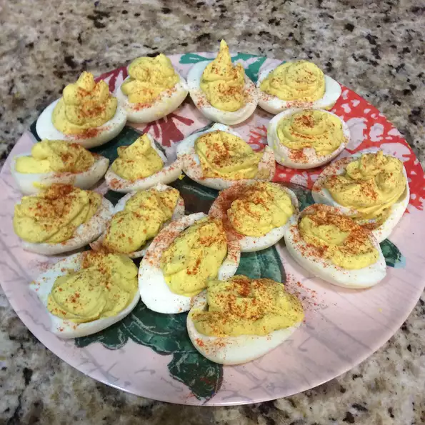

Classic Savory Deviled Egg recipe

Description
Hard-cooked eggs are stuffed with a creamy blend of mayonnaise,
Dijon mustard and rice wine vinegar. Fresh dill and garlic powder add a delightful flavor.
Ingredients
- 6 hard-cooked eggs, halved
- 1/4 mayonnaise
- 1 teaspoon rice wine vinegar
- 1/2 teaspoon chopped fresh dill (Optional)
- 1 teaspoon Dijon mustard
- 1/4 teaspoon garlic powder
- 1/8 teaspoon salt
- 12 sprigs fresh dill (Optional)
Steps
- Scoop egg yolks into a bowl and set egg whites aside.
- Mash yolks, mayonnaise, vinegar, 1/2 teaspoon chopped dill, Dijon mustard, garlic powdern and salt.
- Spoon yolk mixture into egg whites.
- Garnish with dill sprigs.
- Refrigerate until ready to serve.